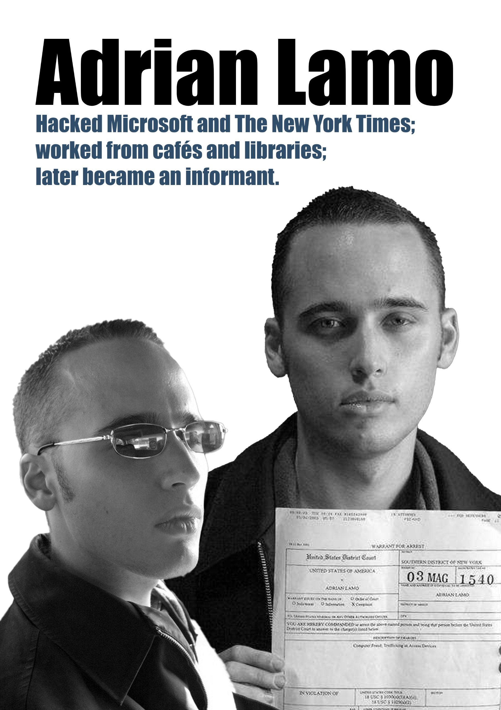

Adrian Lamo

Adrian Lamo was known as the "Homeless Hacker" because he operated from coffee shops and public libraries. He gained notoriety for hacking into high-profile targets like the New York Times and Microsoft.
Later in life, he became a controversial figure for reporting Chelsea Manning to the FBI, sparking a massive debate within the hacker community about loyalty, ethics, and the responsibility of those who possess secret information.